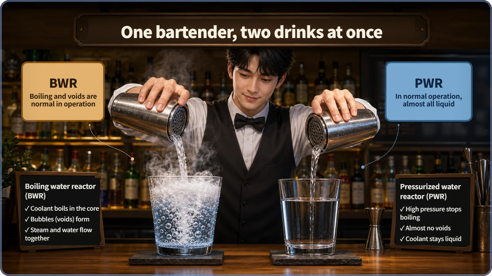
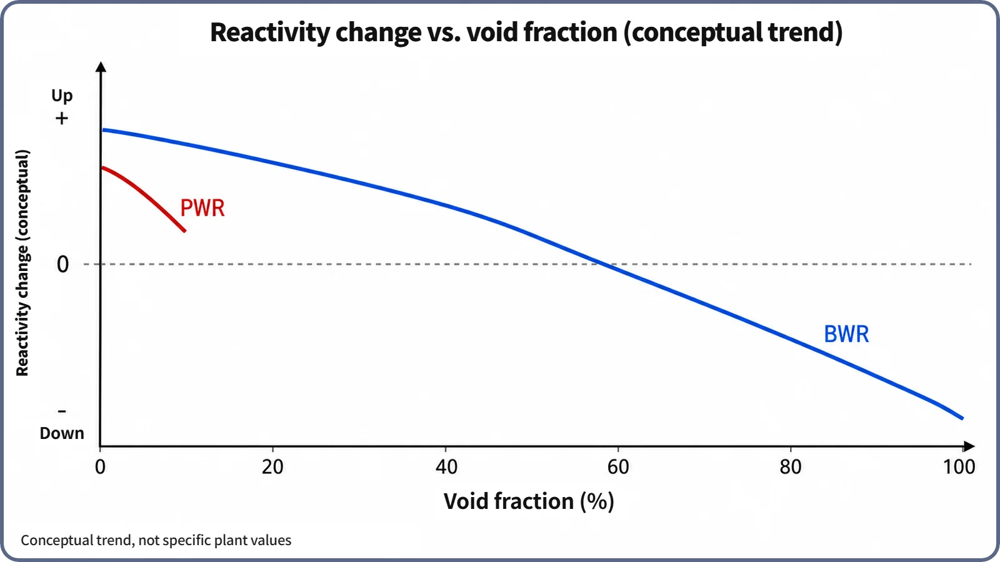

Reactor Kinetics & Reactivity · 121
One Recipe Wants Foam, the Other Bans It — Why the Void Coefficient Differs by Reactor Type
A boiling water reactor runs with steam bubbles every day and steers power with them; a pressurized water reactor keeps them near zero. Same physics, two very different jobs.
The void coefficient tells you how much, and in which direction, reactivity changes when steam bubbles (voids) form in the coolant. Commercial light water reactors are designed under-moderated so that it stays negative, yet a boiling water reactor runs with voids every day and uses them as a power knob, while a pressurized water reactor keeps voids near zero and treats the coefficient as a safety-analysis parameter. [1]
Same bubbles, two attitudes
When reactor coolant boils locally, it forms steam bubbles called voids. Where a void appears, the water's density drops sharply, and since water is also what slows neutrons down, reactivity (how far the chain reaction is leaning toward growing or shrinking) changes. The obvious follow-up question: in which direction, and by how much?
The answer depends on the reactor. Faced with the same event, "bubbles have formed," one reactor type treats it as an exception to avoid, while another makes it part of normal operation and even uses it as a control knob. That difference is the story of the void coefficient.
Foam at one end of the bar, not a single bubble at the other
Picture a bartender making two drinks at once. The left glass is only finished when it is full of foam, bubbles streaming up. The right glass must be perfectly clear, so the bartender controls ingredients, temperature and pouring to keep a single bubble from forming. Same bartender, opposite goals. The left recipe is the boiling water reactor (BWR); the right one is the pressurized water reactor (PWR).

In a BWR the coolant really boils as it passes through the core, and that steam drives the turbine. So even in normal operation the core always contains substantial void: near the bottom the water is still close to unboiled liquid, but the void fraction rises toward the top, reaching roughly the 40% range as a core average and much higher near the top. That is a representative textbook figure, not a value for any particular plant. [2]
A PWR keeps its primary circuit at very high pressure, so the coolant stays liquid (subcooled, below its boiling point) all the way through the core. There can be some very local boiling right at fuel-rod surfaces, but bulk boiling into a significant void fraction does not happen, in principle, in normal operation.
The shared base ingredient: the moderator ratio
Both recipes obey one rule. How well a core slows neutrons depends on the moderator-to-fuel ratio, the relative amounts of water and fuel. Increase that ratio and you eventually reach an "optimum moderation" point where the chain reaction is sustained most effectively. Commercial reactors, PWR and BWR alike, are designed slightly short of that optimum: under-moderated.
Why? In an under-moderated core, a void that pushes water out weakens moderation, so reactivity can only go down: negative feedback. In an over-moderated core, losing water could move the core closer to the optimum and push reactivity up: positive feedback. Designs whose moderator and coolant are physically separate can behave differently and are outside the scope of this explainer. So in both recipes, foam should only make the drink weaker. The difference is whether foam belongs in the recipe at all. [1]
The bartender who uses foam as a knob: BWR recirculation flow
A BWR turns under-moderation into an active power control knob. Speed up the coolant flowing through the core (the recirculation flow) and the water spends less time in the core, boils less, and the void fraction falls. Fewer voids means more liquid water, better moderation, and, thanks to under-moderation, higher reactivity and power. Slow the flow and the opposite happens.
Without moving a control rod, just by changing recirculation pump speed, operators can move power quickly over roughly 60–100% of rated power. That is the range usually quoted; exact limits vary by plant and vendor. It is like the bartender adjusting the bubbles in the left glass to the customer's taste: in this recipe, foam is both ingredient and knob. [1] [3]
A recipe where foam is not allowed: the PWR
In a PWR the void fraction stays close to zero, so voids play no role as a knob. Power is controlled with control rod position and the concentration of boric acid dissolved in the coolant (soluble boron, a neutron-absorbing chemical).
Is the void coefficient useless here, then? No. It is a key design parameter for safety analysis, used to examine unusual events in which the core could suddenly void, such as a loss-of-coolant accident. The bartender never wants foam in the right glass, but still has to know how that recipe would react if foam ever appeared.
The secret ingredient only PWRs use: boric acid
Because the boron is dissolved in the coolant (which is also the moderator), a void that pushes water out also pushes out the boron absorber in that spot. Less absorber means fewer neutrons absorbed, which pushes reactivity up. So the under-moderation effect (reactivity down) and the boron-displacement effect (reactivity up) partly offset each other. The higher the boron concentration (typically at the beginning of core life, with lots of fresh fuel loaded), the less negative the void coefficient tends to be. How large the offset is depends on core design, boron concentration and burnup; this explainer covers only why it exists. [1]
A BWR uses no soluble boron in normal operation (it relies on control rods and recirculation flow), so this offset never enters its void coefficient. That is why PWR technical specifications include controls such as an upper limit on boron concentration during high-boron periods like the beginning of core life, keeping the reactivity coefficients within safety requirements. Specific limits differ by design and licensing documents.
| Item | PWR | BWR |
|---|---|---|
| Void in normal operation | Practically none (subcooled liquid; local surface boiling only) | Substantial (core average roughly 40% range, higher near the top) |
| Role of the void coefficient | Safety-analysis design parameter, not a normal control variable | Actively used for power control (recirculation flow, load following) |
| Extra variable to manage | Offset from soluble boron concentration | None (no soluble boron in normal operation) |
| Common design principle | Under-moderated design keeps the void coefficient negative | |
Both recipes on one graph
Plotted conceptually, both curves slope downward. The BWR is designed and verified to keep this negative relationship across the wide range where voids normally exist; the PWR's focus is behavior near zero void, where the boron effect can change the slope somewhat with core conditions.

Common misunderstandings
"More voids are always dangerous." Under-moderated design keeps the void coefficient negative, and the BWR uses this in normal operation. Voids are a variable managed as designed.
"A PWR never has any voids." There is no bulk voiding in normal operation, but very local surface boiling can occur, and in accident scenarios the core can void significantly. "Not present in normal operation" is not "physically impossible."
"The void coefficient is the same in every reactor." Moderator-to-fuel ratio, boron use and normal void content differ by type, so its size and detailed behavior differ too.
"A BWR is less safe because it runs with voids." Both types must meet licensing and safety-analysis requirements that keep the void coefficient negative, and the BWR is verified from the design stage to stay negative across a wide void range. This is a general principle, not a quantitative comparison of plants.
Why it matters
A negative void coefficient is central to a reactor's self-stability, its tendency to hold itself back when power tries to climb, and both PWRs and BWRs must demonstrate it in licensing review. Core designers balance under-moderation, boron use and the normal void range to keep the coefficient inside the safety envelope.
Key takeaways
- The void coefficient says how much, and which way, reactivity changes when the void fraction changes; its sign and size differ by reactor type.
- Under-moderated design keeps it negative in most commercial reactors.
- A BWR runs with substantial voids and uses recirculation flow to turn void reactivity into power control, including load following.
- A PWR keeps voids near zero; its void coefficient is a safety-analysis parameter, not a control tool.
- Only the PWR has the boron offset, a main reason the two types manage the coefficient differently.